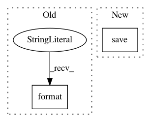

bb857bb2469689da4d2e19473049e47ccc1be04a,examples/reinforcement_learning/tutorial_prioritized_replay.py,DQN,train,#DQN#,432
Before Change
self.niter += 1
if self.niter % target_q_update_freq == 0:
sync(self.qnet, self.targetqnet)
path = os.path.join(args.save_path, "{}.npz".format(self.niter))
tl.files.save_npz(self.qnet.trainable_weights, name=path)
return td_errors.numpy()
After Change
self.niter += 1
if self.niter % target_q_update_freq == 0:
sync(self.qnet, self.targetqnet)
self.save(args.save_path)
return td_errors.numpy()
def save(self, path):
In pattern: SUPERPATTERN
Frequency: 3
Non-data size: 2
Instances
Project Name: tensorlayer/tensorlayer
Commit Name: bb857bb2469689da4d2e19473049e47ccc1be04a
Time: 2020-02-07
Author: 34995488+Tokarev-TT-33@users.noreply.github.com
File Name: examples/reinforcement_learning/tutorial_prioritized_replay.py
Class Name: DQN
Method Name: train
Project Name: jindongwang/transferlearning
Commit Name: 2733bef356c53286d475a67476d88d4840923830
Time: 2020-09-30
Author: jindongwang@outlook.com
File Name: code/deep/finetune_AlexNet_ResNet/finetune_office31.py
Class Name:
Method Name: finetune
Project Name: google/uis-rnn
Commit Name: ac1f07e722b1117642774b04d96e7174751e325c
Time: 2018-10-18
Author: aonan@aonan.nyc.corp.google.com
File Name: demo.py
Class Name:
Method Name: diarization_experiment